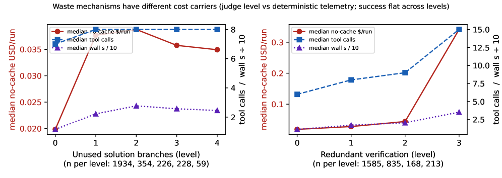
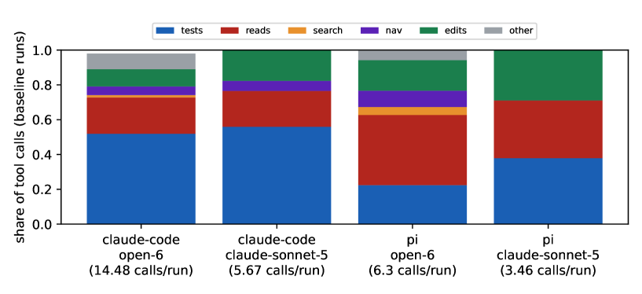

Same Task, Different Work: Prompt-Induced Waste in Coding Agents
TL;DR
- "Same Task, Different Work: Prompt-Induced Waste in Coding Agents" (arXiv 2608.01347; Sarel Weinberger, Amir Hozez, PointFive) is a preregistered benchmark of 4,644 valid runs across 24 deterministic coding tasks, six ≥500B-class open reasoning models, and two real harnesses (PI.DEV and Claude Code), asking what work a prompt's wording buys — with the task, acceptance criteria, and test command held fixed.
- Wording that requests work reliably causes that work, with zero success gain: "develop several distinct approaches" inflates reasoning 2.4–7.4x on all six holdout models and produces ~3 elaborated-then-discarded solution branches per run; "be absolutely certain" spawns verification loops whose highest observed level costs 18.25x the clean-run median with 15 vs. 6 median tool calls. A length-matched verbose restatement stays at ~1.0x.
- The two waste mechanisms have different cost carriers — branch tournaments are token-borne, verification loops are tool-borne — and the harness amplifies both: Claude Code carries a 12–15x larger static prefix, uses 2–7x more turns, and costs 5–30x more per success than PI.DEV on matched cells. A "bounded efficiency" instruction (smallest sufficient change + explicit stop rule) avoids all measured waste while preserving diagnosis and validation.
Why this matters
Everyone who runs coding agents has folk beliefs about prompt phrasing — "think deeply", "consider alternatives", "make sure it's right". This paper is the first controlled attempt I've tracked to measure what those phrases actually cost when everything else (task, model, harness, evaluator) is frozen, and it lands on a framing worth internalizing: prompt engineering is work design, not text compression. A short sentence is expensive if it requests expensive behavior; a long restatement is free if it requests nothing new. For anyone operating agents at scale — or building harnesses — the decomposition into token-borne vs. tool-borne waste is directly actionable, because the fixes differ: elaboration constraints for the former, stop rules and duplicate-action guards for the latter. The harness result is equally practical: prefix size, turn discipline, and tool-mix policy can dominate the user-prompt effect entirely, so benchmarking models without instrumenting the harness silently misattributes cost.
The core idea
A coding prompt does more than specify an objective — it allocates computation. Two instructions attached to the same bug fix can both yield the correct patch while inducing radically different workloads: one launches an internal tournament of candidate solutions, the other a bounded execution path. The authors preregistered hypotheses, metrics, and waste-classification rules before collecting results, then ran nine semantically controlled prompt variants (baseline, verbose repetition, deep thinking, exhaustive exploration, multiple approaches, max certainty, adjacent cleanup, autonomy, bounded efficiency) plus stress variants that intentionally break semantic equivalence (misleading hints, ambiguous scope, etc.).
The primary metric is a paired reasoning ratio. Notation reconstructed from the Appendix A.5 prose — verify in the paper:
where the denominator pairs each run against its own block's baseline, removing model/task/harness level effects. A variant is classified wasteful only when the median ratio exceeds 1.5, the task-clustered 95% CI lower bound exceeds 1.1, there is no material success gain, and the effect appears on multiple tasks (rule stated in the paper; symbolic form reconstructed).
How it works
Setup. 24 deterministic tasks (8 low/8 medium/8 high complexity; Python/JavaScript/Go), each with a clean fixture, visible tests, and hidden deterministic evaluators that never exist in the workspace. Sixteen tasks form a development split; eight were frozen as holdout, with per-model variant selections frozen before any holdout run. Six models (DeepSeek-V4-Pro, Kimi-K2.6, Kimi-K2.7-Code, Nemotron-3-Ultra-550B-A55B, Inkling, GLM-5.2) run under PI.DEV (OpenAI chat completions) and Claude Code (Anthropic Messages via a pinned LiteLLM gateway), with dual-side reverse proxies capturing both sides of the gateway. Post-registration studies add Kimi-K3 and first-party claude-sonnet-5.
Trace annotation. 2,801 provider-exposed reasoning traces get condition-blind semantic annotation against a frozen rubric (14 composition counts, six waste mechanisms), with mandatory evidence quotes; 91.1% of nonzero counts are evidence-backed, and agreement is highest exactly on the hypothesis-critical fields (alternatives, unused branches, redundant verification; κ 0.55–0.68 cross-judge).
# Benchmark protocol (per preregistered phase)
freeze hypotheses, metrics, waste-classification rules, prompts
for task in 24 tasks: # 16 dev + 8 frozen holdout
render 18 frozen prompt variants # byte-exact, SHA-256 vs run ledger
for (model, harness, task, variant) in paired blocks:
run agent to completion; capture both gateway sides
record reasoning tokens, tool calls by type, turns,
latency, cache fields, cost; grade on hidden tests
for trace in provider-exposed reasoning traces:
annotate condition-blind (judge never sees variant labels):
alternatives considered / elaborated / implemented,
redundant verification level, unsupported assumptions
for variant in variants:
R = per-block paired reasoning ratios vs baseline median
wasteful iff median(R) > 1.5 and CI_low > 1.1
and no material success gain and multi-task
holdout: rerun dev-selected top-3 waste variants on 8 unseen tasks x5
Mechanism decomposition. The multiple_approaches instruction produces +3.5 considered / +3.0 elaborated / +1.0 implemented approaches vs. baseline — an internal tournament whose losers never reach the repository. The first discarded branch raises median no-cache run cost ~1.9x while median tool calls stay at 7–8: token-borne. max_certainty instead propagates into actions: +1.75 median post-success tool calls, repeated already-green test runs (worst case: Kimi-K2.6 rerunning a green suite six times), and 3x wall-clock at the top verification level: tool-borne, because every tool result re-enters context and can trigger another turn.

Figure 1 from the paper: different waste mechanisms have different cost carriers.Results
- Holdout (frozen, 8 unseen tasks, 5 reps/cell): multiple approaches confirmed wasteful on 6/6 models (2.44x–7.40x); deep thinking confirmed wherever selected (1.57–2.21x); bounded efficiency confirmed neutral on 6/6 (0.48–1.16x). Verbose repetition ~1.0x — the unit that matters is implied work, not prompt length.
- Verification loops: condition-blind annotated redundant-verification level 3+ runs (n=213) cost 18.25x the level-0 median [15.13, 21.06], execute 15 vs. 6 median tool calls, take 3x wall-clock — no success gradient. (Descriptive mediator analysis; the causal claim is that certainty wording increases verification behavior.)
- Misdirection beats noise: a plausible wrong architectural hint raises reasoning 2.61x and pre-first-edit deliberation 4.2x; irrelevant context (1.03x) and conflicting constraints (1.05x) are nearly free. Unsupported assumptions are the only annotated marker negatively associated with success (ρ = −0.19).
- Harness amplification: PI.DEV transmits 1,147–1,642 prefix tokens vs. Claude Code's 15,983–20,330 (12–15x); Claude Code uses 10–41 turns vs. 5–7, and is verification-heavy (52% of tool calls are test executions vs. 22%; PI.DEV is 40% reads vs. 21%). Net: 5–30x cost-per-success difference at ~equal success. Caching rebates ~61% of the bill (69–75% on Sonnet 5) without changing behavior.
- Robustness: effects survive four paraphrases per family (waste variants 3.0–6.7x, length-matched controls 0.96–1.05x), a Kimi-K3 replication (16.6x relative inflation off a 55-token baseline — but absolute waste at or below K2 levels, a good lesson in denominators), and a first-party claude-sonnet-5 study (multiple approaches 2.52–2.70x output tokens; max certainty the largest native family at 4.13x; deep thinking only 1.25–1.30x, consistent with adaptive thinking absorbing explicit cues).

Figure 2 from the paper: harness tool policy determines how much room certainty language has to propagate.How it connects
- No Universally Best Harness for Automated Discovery — that paper showed harness rankings flip across tasks; this one shows why harness mechanics matter even for a fixed task: prefix size, turn discipline, and tool composition are first-order cost variables, not implementation details.
- Harness Rankings Are Model-Dependent (tracked item) — the Codex-overoptimization finding is the model-side complement: here, goal-only prompts reduce reasoning under Claude Code (whose system prompt supplies methodology) while exploration cues amplify 4–4.8x under Claude Code vs. 1.1–2.4x under PI.DEV. Harness and prompt interact; neither ranking is stable alone.
- Agentic Context Management — this paper's tool-borne waste channel (every tool result re-enters context, inducing more turns) is exactly the growth process context-management schemes try to tame. But the authors note the limit: compression reduces the price of tool outputs, not the agent's propensity to issue unnecessary calls. Stop rules and context management attack different layers.
Critical take
The design is unusually honest — preregistration, frozen holdouts, byte-exact prompts, both-sides gateway capture — and the negative-control structure (verbose repetition ~1.0x) is what makes the headline interpretable. Three real caveats. First, the tasks are small (≤4 files) with ~100% success ceilings, so "no success gain" is partly guaranteed by construction; on repository-scale or architectural work, comparing approaches may genuinely pay, and the authors say so. Second, the 18x verification figure is a descriptive join of annotation and telemetry, not a randomized mediator effect — the causal unit is the prompt family, where effects are large but smaller. Third, the authors are a cloud cost-optimization company and the study was executed by Claude "operating as an autonomous research assistant" — the incentives and the pipeline both favor finding waste, even if the preregistration discipline constrains how it could be manufactured. I'd also flag that the harness comparison, while carefully reconciled (they rule out Anthropic-side classifiers by serving open models via Together), compares one verification-heavy harness configuration against one inspection-heavy one; it measures amplification convincingly, but "5–30x" is a property of this pairing, not of harnesses in general.
If you remember three things
- Prompts allocate work. "Compare several approaches" buys ~3 discarded reasoning branches (2.4–7.4x tokens) and one implementation; "be absolutely certain" buys repeated green-test reruns (up to 18x cost). Neither improves success on these tasks; a length-matched restatement costs nothing.
- Waste has two carriers, needing two fixes. Branch tournaments are token-borne (constrain elaboration and deliverables); verification loops are tool-borne (give an executable stop rule: "rerun only after a relevant change or failure; stop when acceptance criteria pass").
- Measure the harness separately from the model. A 12–15x prefix gap, 2–7x turn gap, and different tool mixes produced a 5–30x cost-per-success spread at equal correctness — larger than any prompt effect in the study.